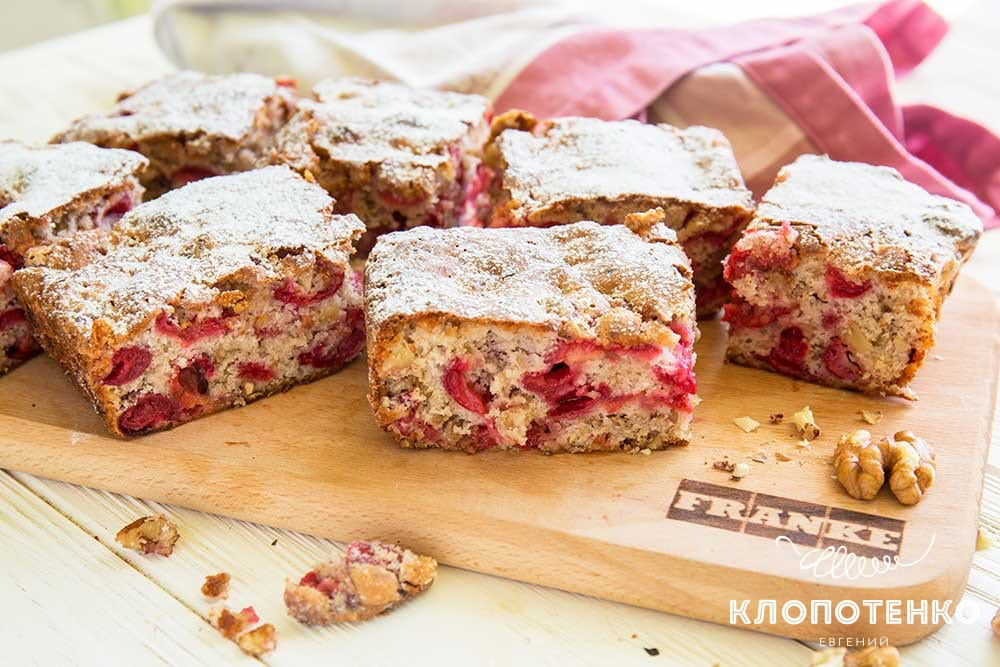

Пирог с вишней и орехами

Ингредиенты (4 порции):
125 г Мука пшеничная
2 шт. Яйца
1 ч. л. Разрыхлитель для теста
180-200 г Сахар (по вкусу)
10 г Сахар ванильный
100 г Ядра грецких орехов
400 г Вишня (без косточки)
1 ст. л Сахарная пудра
1 щепотка Соль
Приготовление:
Чистим вишню. В большую миску разбейте яйца (2 шт.), добавьте сахар (180-200 г) и ванильный сахар (10 г). На следующем этапе добавьте разрыхлитель для теста (1 ч. л.). Смешайте яйца, сахар и разрыхлитель при помощи венчика. У вас должна получиться однородная и не очень пышная масса. Не нужно взбивать яйца до состояния пены.При помощи ножа измельчите ядра грецких орехов (100 г). Степень измельчения зависит от ваших предпочтений, но измельчать орехи в пыль я все-таки не рекомендую. Орехи придают очень интересный вкус и структуру этому вишневому пирогу. Добавьте муку (125 г) к взбитой яично-сахарной смеси, затем добавьте 1 щепотку соли и перемешайте до получения однородной консистенции. Тесто должно напоминать очень густую сметану. Добавьте в тесто измельченные грецкие орехи и вишню. Хорошо перемешайте, чтоб равномерно распределить их по всему тесту. Застелите форму для выпекания пергаментом. Таким образом пирог будет очень легко достать из формы. Тесто должно быть немного ниже уровня бортика, так как оно еще немного поднимется.Отправьте форму в разогретую до 180 градусов духовку примерно на 25-30 минут. Проверяйте готовность пирога с помощью деревянной шпажки или обычной зубочистки.